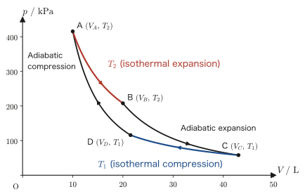
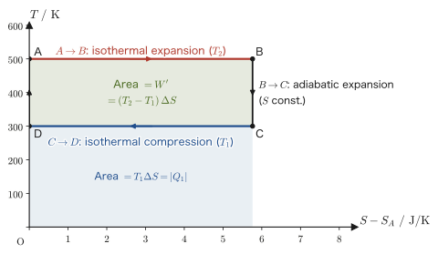

Chapter 29Entropy — Definition and Proof That It Is a State Quantity
Ice melts into water on its own, but water never turns back into ice on its own while warming its surroundings. Ink dropped into a glass spreads on its own, but the spread-out ink never gathers into a single point on its own. If we pull out the stopper, a gas spreads into a vacuum on its own, but the spread-out gas never returns to its original corner on its own. In every one of these phenomena, the total amount of energy is conserved in either direction, yet in reality the process proceeds in only one direction. The first law of thermodynamics (the law of conservation of energy) that we learned in high school physics cannot, by itself, explain this “direction.”
The quantity that determines the direction was, surprisingly, hidden inside the Carnot cycle of Chapter 28. It is the combination $Q/T$, the absorbed heat $Q$ divided by the temperature $T$ at that moment. In this chapter we add these up to define a new state quantity, entropy, and we prove, without skipping a single line, that—unlike $Q$ itself—it is truly a state quantity: a quantity whose value is determined only by the initial and final states, independently of the path. In the end, we will be able to decide numerically “the direction in which ice melts” and “the direction in which a gas spreads.”
The proof proceeds by generalizing step by step: one Carnot cycle → two → $n$ → an arbitrary closed path. Starting from a concrete example and generalizing in stages is an important way of thinking common to university physics and mathematics. Once entropy is defined, we write down $S(T,V)$ for an ideal gas and for a van der Waals gas, and establish in three steps that $S$ is a state quantity. Then, starting from the Clausius inequality $\dd S\ge \dd'Q/T$, which includes irreversible changes, we derive the law of entropy increase and answer the opening question, “Does the adiabatic free expansion of a gas occur on its own?”
- Motivate the definition of entropy (the integral form $S_B-S_A=\int_A^B\dd'Q_{\text{rev}}/T$ and the differential form $\dd S=\dd'Q_{\text{rev}}/T$) through a stepwise generalization: from one Carnot cycle to two, to $n$, and to an arbitrary closed path
- Derive the entropy of an ideal gas, $S(T,V)=C_V\ln T+nR\ln V+\alpha_0$, and the entropy of a van der Waals gas, $S(T,V)=C_V\ln T+R\ln(V-b)+\alpha_0$, from the first law $T\dd S=\dd U+p\dd V$
- Find $\Delta S=nR\ln(V_2/V_1)$ for the isothermal reversible expansion of an ideal gas from both the calculation of work and the defining equation, and confirm that the two agree
- Prove that entropy is a state quantity in three steps: (i) the Carnot cycle of an ideal gas, (ii) an arbitrary working substance, (iii) an arbitrary cycle
- Understand how temperature is determined with the triple point of water, $T=273.16\ \mathrm{K}$, as the reference, and the law of entropy increase $\dd S\ge0$ for adiabatic systems, which follows from the Clausius inequality $\dd S\ge\dd'Q/T$
Source notes: Yasuhide Mochizuki, Physics Notes: Thermodynamics, pp. 45–49.
29.1 The Definition of Entropy — Motivation from the Carnot Cycle
Let us first look at some numbers. Consider a Carnot cycle that absorbs $800\ \mathrm{J}$ of heat from a hot reservoir ($400\ \mathrm{K}$) and releases $600\ \mathrm{J}$ of heat to a cold reservoir ($300\ \mathrm{K}$) (the difference, $200\ \mathrm{J}$, becomes work). Dividing the absorbed heat by the temperature of the reservoir with which it was exchanged gives $800/400=2\ \mathrm{J/K}$, and dividing the released heat in the same way gives $600/300=2\ \mathrm{J/K}$; the two are exactly equal. The heats themselves ($800\ \mathrm{J}$ and $600\ \mathrm{J}$) differ, yet dividing by the temperature makes them equal—this small coincidence is the starting point of this chapter.
In Chapter 28, we wrote the temperature of the hot reservoir as $T_2$ and that of the cold reservoir as $T_1$ ($T_1\lt T_2$), and saw that for a Carnot cycle of an ideal gas the relation $Q_2/T_2=Q_1/T_1$ holds between the heat $Q_2$ absorbed from the hot reservoir and the magnitude $Q_1$ of the heat released to the cold reservoir. This chapter also keeps this convention for the indices (hot = 2, cold = 1) unchanged, but we recount the heat with signs. We write the heat absorbed from the hot reservoir as $Q_2\gt0$ and the heat “released” to the cold reservoir as $Q_1\lt0$ (the $|Q_1|$ of this chapter corresponds to the $Q_1$ of Chapter 28). Then the relation of Chapter 28 can be rewritten in the following form, in which the sum on the left-hand side is exactly $0$:
\begin{equation} \frac{Q_1}{T_1}+\frac{Q_2}{T_2}=0 \label{eq:29-carnot-qt} \end{equation}In the numerical example above, $T_2=400\ \mathrm{K}$, $Q_2=800\ \mathrm{J}$, $T_1=300\ \mathrm{K}$, and $Q_1=-600\ \mathrm{J}$, and indeed $-600/300+800/400=0$.
Caution: The sign convention for heat and the symbol $\dd'Q$
In this chapter (and throughout this book), we count the heat absorbed by the system as positive and the heat released as negative. In Chapter 28 we denoted the heat released to the cold reservoir by its magnitude (a positive quantity) $Q_1$, but from this chapter on we recount $Q_1$ as a signed (negative) quantity (the $\abs{Q_1}$ of this chapter corresponds to the $Q_1$ of Chapter 28). Accordingly, the relation $W'=Q_2-Q_1$ of Chapter 28 becomes $W'=Q_2+Q_1$ in the notation of this chapter. On the hot side of the Carnot cycle heat is absorbed, so $Q_2\gt0$; on the cold side heat is released, so $Q_1\lt0$ (with magnitude $|Q_1|=-Q_1$). Also, we write an infinitesimal quantity of heat with the symbol $\dd'Q$ introduced in Chapter 23. The prime “$'$” indicates that $\dd'Q$ is not “the change in $Q$” but an infinitesimal quantity of heat whose value depends on the path (an inexact differential).
The left-hand side $Q_1/T_1+Q_2/T_2$ of Eq. \eqref{eq:29-carnot-qt} is none other than the quantity $\displaystyle\oint\frac{\dd'Q}{T}$ around one cycle, calculated by splitting it into two intervals, the isothermal process on the hot side and the isothermal process on the cold side (the adiabatic processes contribute nothing, since $\dd'Q=0$ there). A question now arises naturally—is the property that “the sum of $Q/T$ around one cycle is exactly $0$” a coincidence peculiar to the special example of the Carnot cycle, or is it a more general clue to the existence of a state quantity?
Let us confirm why this question matters. Pressure $p$, volume $V$, and temperature $T$ are all state quantities, determined solely by “what state the gas is in right now.” If we take the gas through one cycle and return it to its original state,
$$ \Delta p=p_1-p_1=0,\qquad \Delta V=V_1-V_1=0,\qquad \Delta T=T_1-T_1=0 $$so each change comes out cleanly to $0$. However, the total heat absorbed and released by the gas, $\Delta Q=Q_1+Q_2$ (the sum including signs), is in general not $0$—in the Carnot cycle, a net amount of heat $Q_1+Q_2=W'\gt0$ (the net work done by the gas on its surroundings) is converted into work, so $\Delta Q\ne0$. That is, the heat $Q$ itself is not a state quantity (the value of $Q$ depends on the path. This is a concrete example of the fact, seen in Chapter 26, that “heat and work are not state quantities; their values depend on the path”).
Eq. \eqref{eq:29-carnot-qt}, however, shows that if we divide the same heat $Q$ by the temperature $T$ and add up $Q/T$ over one cycle, the result is $0$. This strongly suggests that a new quantity $S$ built by collecting up $Q/T$ may, like $p,V,T$, be a “quantity determined only by the present state.”
Intuition: Entropy is the degree of disorder of molecular motion
As we will see, entropy $S$ is a bona fide physical quantity (unit $\mathrm{J/K}$), defined as “the heat $\dd'Q$ received by the gas, divided by the temperature $T$ at that moment and summed up.” At the same time, entropy is often explained as a quantity expressing “the degree of disorder of the molecular motion of the system.” For example, when an orderly crystal (ice) melts into water and the water molecules become free to move about, the disorder of the molecular arrangement increases, and the entropy indeed increases. When $1\ \mathrm{kg}$ of ice at $0\ ^{\circ}\mathrm{C}$ ($273.15\ \mathrm{K}$) melts, it absorbs the heat of fusion $3.34\times10^5\ \mathrm{J}$, so
$$ \Delta S=\frac{Q}{T}=\frac{3.34\times10^5\ \mathrm{J}}{273.15\ \mathrm{K}}\approx1.22\times10^3\ \mathrm{J/K}\ \gt\ 0 $$(Example 29.2). The correspondence “when disorder increases, $\Delta S\gt0$” has been confirmed with numbers. In this chapter we first put the quantitative definition ($\dd S=\dd'Q_{\text{rev}}/T$) at the center and prove that it really is a state quantity. The picture of the “degree of disorder” will be tied to the computed results in the free expansion of Section 29.8.
29.1.1 The case of two cycles
Let us extend Eq. \eqref{eq:29-carnot-qt} to two adjacent Carnot cycles. In the $p$-$V$ diagram (Figure 29.1), with pressure $p$ on the vertical axis and volume $V$ on the horizontal axis, suppose that two Carnot cycles lie side by side sharing one adiabat. Both cycles are traversed clockwise. The left cycle absorbs $Q_2\ (\gt0)$ from a hot reservoir $T_2$ and releases $Q_1\ (\lt0)$ to a cold reservoir $T_1$. The right cycle absorbs $Q_4\ (\gt0)$ from another hot reservoir $T_4$ (in general at a different temperature) and releases $Q_3\ (\lt0)$ to another cold reservoir $T_3$. Applying Eq. \eqref{eq:29-carnot-qt} to each cycle gives the two relations
$$ \frac{Q_1}{T_1}+\frac{Q_2}{T_2}=0,\qquad \frac{Q_3}{T_3}+\frac{Q_4}{T_4}=0 $$Adding these two equations side by side gives the following relation:
\begin{equation} \frac{Q_1}{T_1}+\frac{Q_2}{T_2}+\frac{Q_3}{T_3}+\frac{Q_4}{T_4}=0 \label{eq:29-two-cycles} \end{equation}Algebraically, we have merely added two equations, but in the figure this step has a meaning. The shared adiabat is traversed downward in the left cycle and upward in the right cycle, so if we consider the closed path formed by combining the two cycles, the shared part cancels and disappears from the path, leaving only the outer boundary. Moreover, since $\dd'Q=0$ on an adiabat, the shared part contributes nothing to the left-hand side of Eq. \eqref{eq:29-two-cycles} from the start. In other words, Eq. \eqref{eq:29-two-cycles} shows that for a closed path that exchanges heat with reservoirs at four temperatures $T_1,T_2,T_3,T_4$ and is no longer a Carnot cycle, the sum of $Q/T$ is $0$.
29.1.2 The case of multiple ($n$) cycles
We extend the same idea to the case where $n$ cycles are lined up one after another, each sharing an adiabat with the next. Given an arbitrary reversible closed path $C$ (a closed curve in the $p$-$V$ diagram, the green dashed line in Figure 29.2), we approximate it by the following procedure.
- Divide the interior of the closed curve $C$ into $n$ vertical strips by means of $n+1$ adiabats.
- In each strip, replace the upper arc of $C$ by one short isotherm segment, and the lower arc likewise by one isotherm segment. Each strip then becomes a small Carnot cycle bounded by two isotherms and two adiabats. The whole outer boundary is a staircase-shaped polygonal line made by joining isothermal segments and adiabatic segments.
- Let $Q_k$ be the heat exchanged on the $k$th isothermal segment (temperature $T_k$). Each strip has two isothermal segments, an upper one and a lower one, so there are $n\times2=2n$ isothermal segments in all.
Applying Eq. \eqref{eq:29-carnot-qt} to the Carnot cycle of each strip and adding all $n$ equations together, we obtain
\begin{equation} \sum_{k=1}^{2n}\frac{Q_k}{T_k}=0 \label{eq:29-n-cycles} \end{equation}Each adiabat shared by adjacent strips is traversed downward in one strip and upward in the other, so it cancels out of the combined path, and only the outer staircase remains. Since $\dd'Q=0$ along an adiabat, adiabats do not contribute to Eq. \eqref{eq:29-n-cycles} either, and the left-hand side equals $\oint\dd'Q/T$ taken once around the staircase-shaped polygonal line.
29.1.3 Generalization — arbitrary closed paths
Now we consider the difference between the staircase-shaped polygonal line and the original curve $C$. Suppose that a small piece of $C$ and the staircase of isothermal and adiabatic segments that replaces it connect the same two points. Along either path the change in internal energy $\Delta U$ is the same ($U$ is a state quantity), so by the first law $\Delta U=Q-W'$, the difference in the heat absorbed equals the difference in the work done by the system on its surroundings: $Q_C-Q_{\text{staircase}}=W'_C-W'_{\text{staircase}}$. In the $p$-$V$ diagram the work is the area under the curve, so this difference is the area of the thin region enclosed between the piece of $C$ and the staircase. When we make the strips narrower and increase $n$, the total area of these enclosed regions approaches $0$, and hence the difference in heat also approaches $0$. Likewise, the effect of the slight change of temperature within each segment becomes smaller as the segments become smaller. Therefore, in the limit $n\to\infty$ the sum on the left-hand side of Eq. \eqref{eq:29-n-cycles} is replaced by an integral along $C$ (the method of Riemann sums; University Mathematics, Section 5.1):
\begin{equation} \lim_{n\to\infty}\sum_{k=1}^{2n}\frac{Q_k}{T_k}=\oint_C\frac{\dd'Q}{T} \label{eq:29-limit-integral} \end{equation}Here $\displaystyle\oint_C$ denotes the integral once around the path $C$ (a line integral around a closed path whose starting point and end point coincide). Since Eq. \eqref{eq:29-n-cycles} held for every $n$, the right-hand side of its limit must also be $0$. Therefore,
\begin{equation} \oint_C\frac{\dd'Q}{T}=0 \label{eq:29-clausius-cycle} \end{equation}holds for every reversible closed path $C$. This is called the Clausius equality (if irreversible changes are included, $=$ becomes $\le$; Section 29.7).
Eq. \eqref{eq:29-clausius-cycle} is the heart of the matter, showing that $Q/T$ can be a state quantity. In the following derivation, we actually show from this equation that “the integral is independent of the path.”
Derivation: From $\oint\dd'Q/T=0$ to the path independence of $\int_A^B\dd'Q/T$
Suppose there are two reversible paths, I and II, from state $A$ to state $B$. Consider the closed path that proceeds $A\to B$ along I and returns $B\to A$ by traversing II in the opposite direction. A reversible change can be traversed in the reverse direction, and when it is traversed in reverse the sign of $\dd'Q$ at each stage is reversed, so the integral along II traversed in reverse is $\int_{B\,(\mathrm{II})}^{A}=-\int_{A\,(\mathrm{II})}^{B}$. Since this closed path is reversible, Eq. \eqref{eq:29-clausius-cycle} gives
$$ 0=\oint\frac{\dd'Q}{T}=\int_{A\ (\mathrm{I})}^{B}\frac{\dd'Q}{T}+\int_{B\ (\mathrm{II}\text{, reversed})}^{A}\frac{\dd'Q}{T} =\int_{A\ (\mathrm{I})}^{B}\frac{\dd'Q}{T}-\int_{A\ (\mathrm{II})}^{B}\frac{\dd'Q}{T} $$Hence
$$ \int_{A\ (\mathrm{I})}^{B}\frac{\dd'Q}{T}=\int_{A\ (\mathrm{II})}^{B}\frac{\dd'Q}{T} $$That is, whichever reversible path from $A$ to $B$ is taken, the value of the integral is determined by $A$ and $B$ alone. So fix one reference state $O$ in advance and define the entropy of state $A$ as $S(A)=\int_O^A\dd'Q_{\text{rev}}/T$; then $S(A)$ is determined by $A$ alone. If the choice of the reference $O$ is changed, $S$ shifts by a constant independent of the state, but the difference $S_B-S_A$ does not change (this constant corresponds to the constant of integration $\alpha_0$ in Section 29.2).
∎
We therefore define this integrand $\dd'Q/T$ as the infinitesimal change of a new state quantity.
Definition 29.1: Entropy
When a system receives an infinitesimal amount of heat $\dd'Q_{\text{rev}}$ in a reversible change (a quasi-static change with no dissipation such as friction), let $T$ be the absolute temperature of the system at that moment. The state quantity $S\ [\mathrm{J/K}]$ defined by
\begin{equation} \dd S\equiv\frac{\dd'Q_{\text{rev}}}{T} \label{eq:29-entropy-diff} \end{equation}is called the entropy (the differential-form definition; $\dd'Q_{\text{rev}}$ is the heat received by the system in a reversible change. The treatment of irreversible changes is given in Section 29.7). Integrating along a reversible path from state $A$ to state $B$ determines the entropy difference between the two states,
\begin{equation} S_B-S_A=\int_A^B\frac{\dd'Q_{\text{rev}}}{T} \label{eq:29-entropy-int} \end{equation}(the integral-form definition). By the derivation above, the value of this integral does not depend on the choice of the reversible path from $A$ to $B$, so $S$ can be defined as a state quantity.
Example 29.1: Numerical check that $Q$ is not a state quantity, yet the sum of $Q/T$ is $0$
In a Carnot cycle of an ideal gas operating between a hot reservoir at $T_2=500\ \mathrm{K}$ and a cold reservoir at $T_1=300\ \mathrm{K}$, $Q_2=1000\ \mathrm{J}$ was absorbed from the hot reservoir in one cycle. (1) Find the heat $Q_1$ released to the cold reservoir (including its sign). (2) Find the net work $W'$ done by the gas on its surroundings in one cycle and the thermal efficiency $\eta$. (3) Compare $Q_1+Q_2$ with $Q_1/T_1+Q_2/T_2$, and verify that the former is not $0$ whereas the latter is $0$.
Solution. (1) From Eq. \eqref{eq:29-carnot-qt}, $Q_1/T_1+Q_2/T_2=0$, we obtain
$$ Q_1=-\frac{T_1}{T_2}Q_2=-\frac{300}{500}\times1000\ \mathrm{J}=-600\ \mathrm{J} $$(since heat is released, the sign is negative; the magnitude is $600\ \mathrm{J}$). (2) The gas returns to its original state after one cycle, so $\Delta U=0$. Putting $Q=Q_1+Q_2$ in the first law $\Delta U=Q-W'$ gives $0=Q_1+Q_2-W'$, so $W'=Q_1+Q_2=(-600+1000)\ \mathrm{J}=400\ \mathrm{J}$. The thermal efficiency is $\eta=W'/Q_2=400/1000=0.40$, which agrees with the result of Chapter 28, $1-T_1/T_2=1-300/500=0.40$. (3)
$$ Q_1+Q_2=-600+1000=400\ \mathrm{J}\ (\ne0),\qquad \frac{Q_1}{T_1}+\frac{Q_2}{T_2}=\frac{-600}{300}+\frac{1000}{500}=-2+2=0 $$The total heat, $400\ \mathrm{J}$ (which is exactly the net work $W'$), is not $0$, which shows that $Q$ is not a state quantity. On the other hand, the sum of $Q/T$ is exactly $0$, in agreement with the statement of Eq. \eqref{eq:29-carnot-qt}.
Example 29.2: Entropy change on melting ice
$1.00\ \mathrm{kg}$ of ice at $0\ ^{\circ}\mathrm{C}$ ($273.15\ \mathrm{K}$) was melted reversibly into water at the same temperature. Taking the heat of fusion to be $3.34\times10^5\ \mathrm{J/kg}$, find (1) the heat $Q$ absorbed by the ice and (2) the entropy change $\Delta S$. (3) Conversely, state the sign of $\Delta S$ when $1.00\ \mathrm{kg}$ of water at $0\ ^{\circ}\mathrm{C}$ freezes reversibly at the same temperature.
Solution. (1) $Q=1.00\ \mathrm{kg}\times3.34\times10^5\ \mathrm{J/kg}=3.34\times10^5\ \mathrm{J}$. (2) Melting takes place at the constant temperature $T=273.15\ \mathrm{K}$, so in Eq. \eqref{eq:29-entropy-int} $T$ can be taken outside the integral:
$$ \Delta S=\int\frac{\dd'Q_{\text{rev}}}{T}=\frac{Q}{T}=\frac{3.34\times10^5\ \mathrm{J}}{273.15\ \mathrm{K}}\approx1.22\times10^3\ \mathrm{J/K} $$(3) On freezing, the heat is $Q=-3.34\times10^5\ \mathrm{J}$ (released), so $\Delta S=-1.22\times10^3\ \mathrm{J/K}\lt0$. The entropy increases from solid to liquid (the direction in which the molecules become free to move around) and decreases from liquid to solid.
29.2 The Entropy of an Ideal Gas
Now that Definition 29.1 is available, let us find the entropy $S$ of $n\ \mathrm{mol}$ of an ideal gas concretely, choosing the temperature $T$ and the volume $V$ as the variables that specify the state, in the form of a function $S(T,V)$. Here the heat capacity at constant volume $C_V$ is taken to be a constant independent of temperature (for a monatomic ideal gas, $C_V=\frac32nR$).
Derivation: The entropy of an ideal gas $S(T,V)$
We start from the differential form $\dd S=\dd'Q/T$ (reversible change) of Definition 29.1. We use the first law of thermodynamics (Chapter 23) $\dd U=\dd'Q-\dd'W'$ together with the work $\dd'W'=p_{\mathrm{ex}}\,\dd V$ (the work done by the gas on its surroundings; Chapter 26). A reversible change is quasi-static, so the external pressure equals the pressure of the gas itself, and we may set $p_{\mathrm{ex}}=p$. Therefore,
$$ \dd'Q=\dd U+p\,\dd V $$The internal energy of an ideal gas is determined by the temperature alone (as we saw in Chapter 27, $(\partial U/\partial V)_T=0$), so $\dd U=C_V\,\dd T$. Therefore,
$$ \dd'Q=C_V\,\dd T+p\,\dd V $$and dividing both sides by $T$, we obtain
\begin{equation} \dd S=\frac{\dd'Q}{T}=\frac{C_V}{T}\dd T+\frac{p}{T}\dd V \label{eq:29-ds-general-ideal} \end{equation}Substituting $p=nRT/V$ from the equation of state of an ideal gas $pV=nRT$ (Chapter 23) gives $p/T=nR/V$, so we obtain
\begin{equation} \dd S=C_V\frac{\dd T}{T}+nR\frac{\dd V}{V} \label{eq:29-ds-ideal} \end{equation}The right-hand side of Eq. \eqref{eq:29-ds-ideal} is the sum of a term consisting of a function of $T$ alone multiplied by $\dd T$ and a term consisting of a function of $V$ alone multiplied by $\dd V$, so each term can be integrated separately (we use the integration formula $\int\dd x/x=\ln|x|+\text{const.}$ from University Mathematics, Section 5.1 without the absolute value signs, since $T\gt0$ and $V\gt0$):
$$ S=\int C_V\frac{\dd T}{T}+\int nR\frac{\dd V}{V}=C_V\ln T+nR\ln V+\alpha_0 $$Here $\alpha_0$ is a constant of integration, determined by the choice of the reference state (as we saw in Section 29.1.3, $S$ is determined up to a constant that depends on the choice of the reference).
∎
Formula 29.1: The entropy of an ideal gas
The entropy of $n\ \mathrm{mol}$ of an ideal gas (in the range where the heat capacity at constant volume $C_V$ can be regarded as constant) is expressed, as a function of the temperature $T$ and the volume $V$, as
\begin{equation} S(T,V)=C_V\ln T+nR\ln V+\alpha_0 \label{eq:29-ideal-gas-entropy} \end{equation}(where $\alpha_0$ is a constant of integration). The quantities $T,V$ inside the logarithms are not treated as quantities with units, but as dimensionless numbers obtained by dividing by reference values (for example, $1\ \mathrm{K}$ and $1\ \mathrm{m^3}$)—otherwise the argument of $\ln T$ would carry units and would make no sense as the argument of a logarithm (one may also regard the logarithms of the reference values as absorbed into $\alpha_0$).
Caution: The meaning of $\alpha_0$ and the absolute value of $S$
What is actually meaningful is not the value of $S$ itself but the difference $\Delta S$ between two states (when we take the difference, $\alpha_0$ cancels). The absolute value of $S$ is fixed when we use the third law of thermodynamics (Chapter 32), which gives the entropy at absolute zero.
Intuition: Why does the entropy take the form of a logarithm ($\ln$)?
The right-hand side of Eq. \eqref{eq:29-ds-ideal} is a sum of $\dd T/T$ and $\dd V/V$, that is, of terms of the form “a change divided by the value itself at that moment.” For example, $\dd V/V$ is a quantity that expresses the relative rate of change, namely by what factor the volume has changed relative to its present value. That adding up such accumulated relative changes produces a logarithmic function is exactly the property of the logarithm that we learned in High School Mathematics, Chapter 6, and it corresponds to the integration formula $\int\dd x/x=\ln x+\text{const.}$ Whether we double or triple the volume, the increases in entropy, $nR\ln2$ and $nR\ln3$, do not depend on the absolute size of the volume but are determined by the “volume ratio” alone—this is the physical reason for the logarithmic form.
Why?: $\dd'Q$ is not a total differential, yet $\dd'Q/T$ is (integrating factor)
In the course of deriving Eq. \eqref{eq:29-ds-ideal}, the infinitesimal quantity of heat was $\dd'Q=C_V\,\dd T+\dfrac{nRT}{V}\,\dd V$. Let $M=C_V$ be the coefficient of $\dd T$ and $N=nRT/V$ the coefficient of $\dd V$. For this expression to be the total differential $\dd f=(\partial f/\partial T)\dd T+(\partial f/\partial V)\dd V$ of some function $f(T,V)$, we must have $\partial M/\partial V=\partial N/\partial T$, because second-order partial derivatives do not depend on the order of differentiation (Schwarz's theorem; University Mathematics, Section 6.3). However,
$$ \frac{\partial M}{\partial V}=\frac{\partial C_V}{\partial V}=0,\qquad \frac{\partial N}{\partial T}=\frac{\partial}{\partial T}\!\left(\frac{nRT}{V}\right)=\frac{nR}{V}\ne0 $$so $\dd'Q$ is not a total differential (this is the mathematical content of the statement that “$Q$ is not a state quantity, and its value depends on the path,” and it is the reason we write $\dd'$ rather than $\dd$). On the other hand, for $\dd S=\dfrac{C_V}{T}\dd T+\dfrac{nR}{V}\dd V$, obtained by dividing by $T$,
$$ \frac{\partial}{\partial V}\!\left(\frac{C_V}{T}\right)=0=\frac{\partial}{\partial T}\!\left(\frac{nR}{V}\right) $$so the condition for a total differential is satisfied. That is, multiplying $\dd'Q$, which is not a total differential, by $1/T$ turns it into a total differential. A factor that, when multiplied, turns an expression into a total differential in this way is called an integrating factor, and $1/T$ is an integrating factor of $\dd'Q$ (University Mathematics, Section 34.4). The mathematical essence of the claim that entropy is a state quantity is nothing other than the statement that “$1/T$ is an integrating factor of $\dd'Q$.”
Example 29.3: Numerical calculation of the entropy of an ideal gas
For a monatomic ideal gas with $n=1\ \mathrm{mol}$ ($C_V=\frac32nR$), find the entropy change $\Delta S=S(T_2,V_2)-S(T_1,V_1)$ when the gas changes from state 1 ($T_1=300\ \mathrm{K},V_1=0.0224\ \mathrm{m^3}$) to state 2 ($T_2=600\ \mathrm{K},V_2=0.0448\ \mathrm{m^3}$).
Solution. In Eq. \eqref{eq:29-ideal-gas-entropy} the constant of integration $\alpha_0$ is common to state 1 and state 2, so it cancels when we take the difference:
$$ \Delta S=C_V\ln\frac{T_2}{T_1}+nR\ln\frac{V_2}{V_1} $$Since $T_2/T_1=600/300=2$ and $V_2/V_1=0.0448/0.0224=2$,
$$ \Delta S=\frac32nR\ln2+nR\ln2=\frac52nR\ln2 $$Substituting numerical values ($R=8.314\ \mathrm{J/(mol\,K)}$, $\ln2\approx0.6931$), we obtain
$$ \Delta S=\frac52\times1\times8.314\times0.6931\ \mathrm{J/K}\approx14.4\ \mathrm{J/K} $$Because both the temperature and the volume have doubled, the entropy has increased (when $T,V$ both increase, the arguments of the logarithms become larger and the entropy increases).
Example 29.4: Computing $\int\dd'Q/T$ along two paths to verify that $S$ is a state quantity
Take the same monatomic ideal gas ($1\ \mathrm{mol}$) as in Example 29.3, and change it from state 1 ($300\ \mathrm{K}$, $0.0224\ \mathrm{m^3}$) to state 2 ($600\ \mathrm{K}$, $0.0448\ \mathrm{m^3}$) along the following two reversible paths. Path I: first expand isothermally at $300\ \mathrm{K}$ until the volume is $V_2$, and then heat at the constant volume $V_2$ up to $600\ \mathrm{K}$. Path II: first heat at the constant volume $V_1$ up to $600\ \mathrm{K}$, and then expand isothermally at $600\ \mathrm{K}$ until the volume is $V_2$. For each path, find the heat $Q$ absorbed and $\int\dd'Q/T$, and compare them.
Solution. In heating at constant volume, the heat absorbed is $C_V\Delta T$ and $\int\dd'Q/T=C_V\ln(T_{\text{final}}/T_{\text{initial}})$. In isothermal expansion, $Q=nRT\ln(V_2/V_1)$ and $\int\dd'Q/T=Q/T=nR\ln(V_2/V_1)$ (Section 29.4). Here $C_V=\frac32R=12.471\ \mathrm{J/K}$, $nR\ln2=5.763\ \mathrm{J/K}$, $C_V\ln2=8.644\ \mathrm{J/K}$, and $C_V(600-300)\ \mathrm{K}=3741\ \mathrm{J}$.
Path I: $Q_{\mathrm{I}}=(8.314\times300\times0.6931+3741)\ \mathrm{J}=(1729+3741)\ \mathrm{J}\approx5470\ \mathrm{J}$, $\displaystyle\int\frac{\dd'Q}{T}=5.763+8.644\approx14.41\ \mathrm{J/K}$.
Path II: $Q_{\mathrm{II}}=(3741+8.314\times600\times0.6931)\ \mathrm{J}=(3741+3458)\ \mathrm{J}\approx7199\ \mathrm{J}$, $\displaystyle\int\frac{\dd'Q}{T}=8.644+5.763\approx14.41\ \mathrm{J/K}$.
The heat absorbed is $5470\ \mathrm{J}$ along one path and $7199\ \mathrm{J}$ along the other, so it depends on the path ($Q$ is not a state quantity), whereas $\int\dd'Q/T$ is the same $14.41\ \mathrm{J/K}$ for both, and it also agrees with $\Delta S$ in Example 29.3 ($S$ is a state quantity).
29.3 The Entropy of a van der Waals Gas
For the ideal gas we ignored both the interactions between molecules and the size of the molecules themselves. The van der Waals equation of state (Chapter 24), which fits real gases better, is
$$ \left(p+\frac{a}{V^2}\right)(V-b)=RT $$(where $a$ is a constant representing the strength of the attractive force between molecules, and $b$ is a constant representing the volume into which molecules cannot approach one another (the excluded volume, which is roughly four times the volume of the molecules themselves). Here we take $n=1\ \mathrm{mol}$.) Let us find the entropy of a gas obeying this equation by the same procedure. The major difference from the ideal gas is that, because attractive forces act between the molecules, the internal energy depends on the volume.
Derivation: The entropy of a van der Waals gas
As in Section 29.2, we start from $\dd S=\dd'Q/T$ and $\dd'Q=\dd U+p\,\dd V$, which give
$$ T\,\dd S=\dd U+p\,\dd V $$For a van der Waals gas, the internal energy $U$ is a function of the two variables, temperature $T$ and volume $V$, so, unlike for the ideal gas, a term due to the change in volume remains:
$$ \dd U=C_V\,\dd T+\left(\frac{\partial U}{\partial V}\right)_T\dd V $$The internal pressure $(\partial U/\partial V)_T$ represents the energy required to increase the volume against the attractive forces between molecules, and for a van der Waals gas it equals $a/V^2$ (we examine the meaning of the internal pressure in Section 27.4 and derive it from the general thermodynamic relations in Section 31.6 (Example 31.10); it corresponds to $U=C_VT-a/V+\text{const.}$). Substituting this gives
$$ T\,\dd S=C_V\,\dd T+\left(\frac{a}{V^2}+p\right)\dd V $$Rearranging the van der Waals equation of state gives $p+\dfrac{a}{V^2}=\dfrac{RT}{V-b}$ (equivalently, $p=\dfrac{RT}{V-b}-\dfrac{a}{V^2}$), so
$$ T\,\dd S=C_V\,\dd T+\frac{RT}{V-b}\dd V $$Dividing both sides by $T$ gives
\begin{equation} \dd S=\frac{C_V}{T}\dd T+\frac{R}{V-b}\dd V \label{eq:29-vdw-ds} \end{equation}We check that this is a total differential by means of Schwarz's theorem (University Mathematics, Section 6.3). Letting $M=C_V/T$ be the coefficient of $\dd T$ and $N=R/(V-b)$ the coefficient of $\dd V$, we have
$$ \frac{\partial M}{\partial V}=\frac{\partial}{\partial V}\!\left(\frac{C_V}{T}\right)=0,\qquad \frac{\partial N}{\partial T}=\frac{\partial}{\partial T}\!\left(\frac{R}{V-b}\right)=0 $$so $\partial M/\partial V=\partial N/\partial T$ holds. Therefore Eq. \eqref{eq:29-vdw-ds} is the total differential of $S(T,V)$, and we may integrate the $T$ term and the $V$ term separately and add the results ($C_V$ is taken to be constant):
$$ S=\int C_V\frac{\dd T}{T}+\int\frac{R\,\dd V}{V-b} $$Viewing $V-b$ as a new variable, the integral on the right is of the form $\int\dd x/x$, so we obtain
\begin{equation} S(T,V)=C_V\ln T+R\ln(V-b)+\alpha_0 \label{eq:29-vdw-entropy} \end{equation}In particular, for a change at constant temperature ($\dd T=0$), the first term cancels when the difference is taken, and we have
\begin{equation} \Delta S=R\ln\frac{V_2-b}{V_1-b}\qquad(\text{isothermal process}) \label{eq:29-vdw-isothermal} \end{equation}∎
Formula 29.2: Entropy of a van der Waals gas
The entropy of $1\ \mathrm{mol}$ of a van der Waals gas (within the range in which the molar heat capacity at constant volume $C_V$ can be regarded as constant) is
$$ S(T,V)=C_V\ln T+R\ln(V-b)+\alpha_0 $$(Eq. \eqref{eq:29-vdw-entropy}). This is Eq. \eqref{eq:29-ideal-gas-entropy} for the ideal gas ($n=1$) with $V$ replaced by $V-b$, and it expresses the fact that the volume in which the gas can move about has decreased by the volume $b$ into which molecules cannot approach one another. The attraction constant $a$ does not appear in $S$.
Intuition: Why does $a$ not appear in $S$?
On the right-hand side of $T\,\dd S=\dd U+p\,\dd V$, the attractive force acts in two places. First, increasing the volume requires supplying energy against the attraction, so $+\dfrac{a}{V^2}\dd V$ is added to $\dd U$. Second, because of the attraction the pressure of the gas is lower than the ideal-gas value by $a/V^2$, so $p\,\dd V$ (the work the gas does on its surroundings) decreases, changing by $-\dfrac{a}{V^2}\dd V$. These two contributions exactly cancel, so no $a$ remains in $T\,\dd S$. If we regard the attraction as an “interaction internal to the gas,” this also says that only the part visible from the outside enters and leaves as heat.
Caution: Do not drop the volume dependence of the internal energy
If, in the same spirit as for the ideal gas, we set $\dd U=C_V\,\dd T$ and substitute $p=RT/(V-b)-a/V^2$ into $T\,\dd S=C_V\,\dd T+p\,\dd V$, we obtain
$$ \dd S=\frac{C_V}{T}\dd T+\left(\frac{R}{V-b}-\frac{a}{V^2T}\right)\dd V $$and an extra term $a/(V^2T)$ appears. But for this expression, with $M=C_V/T$ and $N=R/(V-b)-a/(V^2T)$, we find $\partial M/\partial V=0$ and $\partial N/\partial T=a/(V^2T^2)$, which do not agree. That is, this expression is not the total differential of any function $S(T,V)$, and so it contradicts Theorem 29.2, which states that $S$ is a state quantity. For the entropy to be a state quantity, the volume dependence of the internal energy (the effect of the attractive force) must be taken into account correctly.
Example 29.5: Entropy of a van der Waals gas—limits and numerical values
(1) Verify that, for $b\to0$, Eq. \eqref{eq:29-vdw-entropy} reduces to the entropy \eqref{eq:29-ideal-gas-entropy} of the ideal gas ($n=1$). What happens in the limit $a\to0$ alone? (2) Find $\Delta S$ when $1\ \mathrm{mol}$ of carbon dioxide (with the values $a=0.364\ \mathrm{Pa\,m^6/mol^2}$ and $b=4.27\times10^{-5}\ \mathrm{m^3/mol}$ from Table 24.1) is expanded reversibly and isothermally at $300\ \mathrm{K}$ from $1.0\ \mathrm{L}$ to $2.0\ \mathrm{L}$, and compare it with the ideal-gas value $R\ln2$. Also find the heat $Q$ absorbed, the increase $\Delta U$ in the internal energy, and the work $W'$ done by the gas.
Solution. (1) As $b\to0$, $\ln(V-b)\to\ln V$, so $S\to C_V\ln T+R\ln V+\alpha_0$, which agrees with Eq. \eqref{eq:29-ideal-gas-entropy} for the ideal gas with $n=1$. Since $a$ does not appear in the expression for $S$ in the first place, taking the limit $a\to0$ alone does not change the expression: it remains $C_V\ln T+R\ln(V-b)+\alpha_0$. Only the size of the molecules themselves ($b$) remains in $S$ as a deviation from the ideal gas.
(2) From Eq. \eqref{eq:29-vdw-isothermal},
$$ \Delta S=R\ln\frac{V_2-b}{V_1-b}=8.314\times\ln\frac{2.0\times10^{-3}-4.27\times10^{-5}}{1.0\times10^{-3}-4.27\times10^{-5}}\ \mathrm{J/K}=8.314\times\ln2.0446\ \mathrm{J/K}\approx5.95\ \mathrm{J/K} $$This is about $3\,\%$ larger than the ideal-gas value $R\ln2=5.76\ \mathrm{J/K}$ (because the volume in which the molecules can move is reduced by $b$, the volume ratio increases from $2$ to $2.04$). The heat absorbed is $Q=T\Delta S=300\times5.946\ \mathrm{J}\approx1.78\times10^3\ \mathrm{J}$. The increase in the internal energy is $\Delta U=\displaystyle\int_{V_1}^{V_2}\frac{a}{V^2}\dd V=a\left(\frac1{V_1}-\frac1{V_2}\right)=0.364\times(1000-500)\ \mathrm{J}=182\ \mathrm{J}$. By the first law, the work done by the gas is $W'=Q-\Delta U\approx(1784-182)\ \mathrm{J}\approx1.60\times10^3\ \mathrm{J}$.
29.4 $\Delta S$ for the Isothermal Reversible Expansion of an Ideal Gas
Consider an ideal gas expanded quasi-statically (reversibly) from volume $V_1$ to $V_2$ while its temperature $T$ is held constant. In this section we find the entropy change $\Delta S$ in two ways—(a) computing the work and then using the first law and the definition, and (b) substituting directly into Formula 29.1 of Section 29.2—and confirm that the two agree.
Derivation: $\Delta S$ for isothermal reversible expansion (from the calculation of the work)
Because the change is quasi-static, the external pressure $p_{\mathrm{ex}}$ may be regarded as equal to the pressure of the gas itself, $p=nRT/V$, so the work $W'$ done by the gas on its surroundings (the sign convention of Chapter 23) is
$$ W'=\int_{V_1}^{V_2}p\,\dd V=\int_{V_1}^{V_2}\frac{nRT}{V}\,\dd V $$Since $T$ is constant, it can be taken outside the integral (using $\int\dd V/V=\ln V+\text{const.}$ from University Mathematics, Chapter 5), and
\begin{equation} W'=nRT\int_{V_1}^{V_2}\frac{\dd V}{V}=nRT\Bigl[\ln V\Bigr]_{V_1}^{V_2}=nRT\ln\frac{V_2}{V_1} \label{eq:29-isothermal-work} \end{equation}On the other hand, the internal energy of an ideal gas is determined by the temperature alone, so $\Delta U=0$ in an isothermal process. Substituting $\Delta U=0$ into the first law of thermodynamics $\Delta U=Q-W'$ (Chapter 23) gives
$$ 0=Q-W'\qquad\therefore\ Q=W'=nRT\ln\frac{V_2}{V_1} $$Since this change is quasi-static (reversible), the integral form \eqref{eq:29-entropy-int} of Definition 29.1 can be used as it is, and because $T$ is constant the temperature can be taken outside the integral:
\begin{equation} \Delta S=\int\frac{\dd'Q_{\text{rev}}}{T}=\frac{Q}{T}=\frac{W'}{T}=nR\ln\frac{V_2}{V_1} \label{eq:29-isothermal-ds} \end{equation}∎
This result is also obtained by substituting directly into Formula 29.1 of Section 29.2—if $T$ is constant in Formula 29.1, the $C_V\ln T$ term cancels when the difference is taken, giving
$$ \Delta S=S(T,V_2)-S(T,V_1)=\bigl[C_V\ln T+nR\ln V_2+\alpha_0\bigr]-\bigl[C_V\ln T+nR\ln V_1+\alpha_0\bigr]=nR\ln\frac{V_2}{V_1} $$This agrees exactly with Eq. \eqref{eq:29-isothermal-ds}. “Computing the heat explicitly and substituting it into the definition” and “taking the difference of $S(T,V)$ found as a function of $T$ and $V$” give the same answer, so Formula 29.1 is connected to Definition 29.1 without contradiction. (That a state quantity gives the same answer along different paths was verified in Example 29.4.)
Example 29.6: Entropy change in an isothermal reversible expansion
An ideal gas with $n=1\ \mathrm{mol}$ is expanded isothermally and reversibly to twice its volume ($V_2=2V_1$) while its temperature is kept at $T=300\ \mathrm{K}$. (1) Find the heat $Q$ absorbed by the gas. (2) Find the entropy change $\Delta S$.
Solution. (1) Substituting $V_2/V_1=2$ and $R=8.314\ \mathrm{J/(mol\,K)}$ into Eq. \eqref{eq:29-isothermal-work} gives
$$ Q=W'=nRT\ln2=1\times8.314\times300\times0.6931\ \mathrm{J}\approx1729\ \mathrm{J} $$(2) From Eq. \eqref{eq:29-isothermal-ds},
$$ \Delta S=nR\ln2=1\times8.314\times0.6931\ \mathrm{J/K}\approx5.76\ \mathrm{J/K} $$(The same value is obtained from $\Delta S=Q/T=1729/300\ \mathrm{J/K}\approx5.76\ \mathrm{J/K}$.)
29.5 Proof That Entropy Is a State Quantity
In Section 29.1 we started from the special example of the Carnot cycle, derived $\oint\dd'Q/T=0$ (Eq. \eqref{eq:29-clausius-cycle}), and defined entropy on that basis. However, this does not complete the proof—the argument of Section 29.1 assumed that every “tooth” of the staircase is a Carnot cycle whose working substance is an ideal gas. To say that entropy is truly a meaningful state quantity for every working substance and every reversible change, we need to carry the argument a little further.
Proof strategy
We show that entropy is a state quantity—that is, that $\oint\dd'Q/T=0$ holds for any reversible closed path—in the following three steps.
- (i) For the Carnot cycle of an ideal gas, we check $\oint\dd S=0$ concretely by calculation (Section 29.5.1).
- (ii) We show that $\oint\dd S=0$ holds for any Carnot cycle (a reversible engine operating between two heat reservoirs), even when the working substance is not an ideal gas (Section 29.5.2).
- (iii) We show $\oint\dd S=0$ for any reversible closed path other than a Carnot cycle, and conclude from this that $S$ is a state quantity (Section 29.5.3).
29.5.1 (i) Entropy in the Carnot cycle of an ideal gas
Recall the Carnot cycle of an ideal gas from Section 28.5 (Figure 29.4). Let the temperature of the hot reservoir be $T_2$ and that of the cold reservoir be $T_1$. The cycle consists of four processes: state $A$ (volume $V_A$, temperature $T_2$) → state $B$ (volume $V_B$, temperature $T_2$) → state $C$ (volume $V_C$, temperature $T_1$) → state $D$ (volume $V_D$, temperature $T_1$) → back to state $A$. We find the entropy change $\Delta S$ in each process.
Derivation: Entropy changes in the four processes of the Carnot cycle
[1] $A\to B$ (isothermal expansion, temperature $T_2$): The result of Section 29.4 (Eq. \eqref{eq:29-isothermal-ds}) can be used as it stands, giving
$$ \Delta S_{AB}=\frac{Q_2}{T_2}=nR\ln\frac{V_B}{V_A} $$[2] $B\to C$ (adiabatic expansion): Since this is an adiabatic process, $\dd'Q=0$, so by Definition 29.1
$$ \Delta S_{BC}=\int_B^C\frac{\dd'Q}{T}=0 $$[3] $C\to D$ (isothermal compression, temperature $T_1$): Carrying out the same calculation as in Section 29.4 for temperature $T_1$ and the volume change $V_C\to V_D$, we obtain
$$ \Delta S_{CD}=\frac{Q_1}{T_1}=nR\ln\frac{V_D}{V_C} $$[4] $D\to A$ (adiabatic compression): Since this is an adiabatic process, as in [2],
$$ \Delta S_{DA}=0 $$Therefore, the total entropy change over one cycle is
\begin{equation} \oint_C\dd S=\Delta S_{AB}+\Delta S_{BC}+\Delta S_{CD}+\Delta S_{DA}=nR\ln\frac{V_B}{V_A}+nR\ln\frac{V_D}{V_C}=nR\ln\left(\frac{V_B}{V_A}\cdot\frac{V_D}{V_C}\right) \label{eq:29-carnot-ds-sum} \end{equation}It remains to show that the right-hand side is $0$ (that is, that the quantity in parentheses equals $1$). To do so, we apply Poisson's formula (Chapter 27) $TV^{\gamma-1}=\text{constant}$ ($\gamma=C_p/C_V$) to the adiabatic processes $B\to C$ and $D\to A$:
$$ B\to C:\quad T_2V_B^{\gamma-1}=T_1V_C^{\gamma-1},\qquad\qquad D\to A:\quad T_1V_D^{\gamma-1}=T_2V_A^{\gamma-1} $$If we rewrite the first equation in the form $\left(V_B/V_C\right)^{\gamma-1}=T_1/T_2$ and the second in the form $\left(V_A/V_D\right)^{\gamma-1}=T_1/T_2$ (we have merely rearranged each equation), the right-hand sides are both $T_1/T_2$ and hence equal, so
$$ \left(\frac{V_B}{V_C}\right)^{\gamma-1}=\left(\frac{V_A}{V_D}\right)^{\gamma-1} $$Since $x\mapsto x^{\gamma-1}$ ($\gamma\ne1$) is a monotonic function on the positive real numbers, the bases that were raised to the power $\gamma-1$ must also be equal to each other, and we obtain
$$ \frac{V_B}{V_C}=\frac{V_A}{V_D} \qquad\therefore\ V_BV_D=V_AV_C \qquad\therefore\ \frac{V_B}{V_A}=\frac{V_C}{V_D} $$(We also derived this relation in Illustration 28.1 of Section 28.5.) Substituting it into the quantity in parentheses in Eq. \eqref{eq:29-carnot-ds-sum}, we get
$$ \frac{V_B}{V_A}\cdot\frac{V_D}{V_C}=\frac{V_C}{V_D}\cdot\frac{V_D}{V_C}=1 $$Therefore,
$$ \oint_C\dd S=nR\ln1=0 $$has been shown. The same conclusion can also be written, using properties of the logarithm, as follows. Taking the reciprocal of $V_B/V_A=V_C/V_D$ gives $V_D/V_C=V_A/V_B$, so
$$ \ln\frac{V_D}{V_C}=\ln\frac{V_A}{V_B}=-\ln\frac{V_B}{V_A}\qquad\therefore\ \Delta S_{CD}=-\Delta S_{AB} $$In other words, the entropy gained in the isothermal expansion on the hot side and the entropy lost in the isothermal compression on the cold side cancel each other, having exactly the same magnitude.
∎


Example 29.7: Numerical check of the entropy changes in the four processes of the Carnot cycle
Consider a Carnot cycle with $n=1\ \mathrm{mol}$ of a monatomic ideal gas ($\gamma=5/3$), with hot reservoir $T_2=500\ \mathrm{K}$, cold reservoir $T_1=300\ \mathrm{K}$, $V_A=0.010\ \mathrm{m^3}$, and $V_B=0.020\ \mathrm{m^3}$. (1) Find $V_C$ and $V_D$ from the adiabatic relation, and verify that $V_B/V_A=V_C/V_D$ holds. (2) Find $\Delta S_{AB},\Delta S_{BC},\Delta S_{CD},\Delta S_{DA}$, and verify that their sum is $0$.
Solution. (1) From the adiabatic relation $T_2V_B^{\gamma-1}=T_1V_C^{\gamma-1}$ for $B\to C$, we get $V_C=V_B(T_2/T_1)^{1/(\gamma-1)}$. Since $\gamma-1=2/3$, we have $1/(\gamma-1)=3/2$, so
$$ V_C=0.020\times\left(\frac{500}{300}\right)^{3/2}\ \mathrm{m^3}=0.020\times2.1517\ \mathrm{m^3}\approx0.0430\ \mathrm{m^3} $$Similarly, from the relation $T_1V_D^{\gamma-1}=T_2V_A^{\gamma-1}$ for $D\to A$, we get $V_D=V_A(T_2/T_1)^{3/2}=0.010\times2.1517\ \mathrm{m^3}\approx0.0215\ \mathrm{m^3}$. Hence $V_B/V_A=0.020/0.010=2$ and $V_C/V_D=0.0430/0.0215=2$, so indeed $V_B/V_A=V_C/V_D$ holds (both $V_C$ and $V_D$ are determined by the temperatures and by $V_A,V_B$, and cannot be chosen freely). (2)
$$ \Delta S_{AB}=nR\ln\frac{V_B}{V_A}=1\times8.314\times\ln2\ \mathrm{J/K}\approx5.76\ \mathrm{J/K},\qquad \Delta S_{BC}=0 $$ $$ \Delta S_{CD}=nR\ln\frac{V_D}{V_C}=8.314\times\ln\frac{0.0215}{0.0430}\ \mathrm{J/K}=8.314\times\ln0.5\ \mathrm{J/K}\approx-5.76\ \mathrm{J/K},\qquad \Delta S_{DA}=0 $$Adding these up, we get $5.76+0-5.76+0=0\ \mathrm{J/K}$, which is indeed $0$. Checking in terms of heat, $Q_2=nRT_2\ln2=8.314\times500\times0.6931\ \mathrm{J}\approx2881\ \mathrm{J}$ and $Q_1=-nRT_1\ln2\approx-1729\ \mathrm{J}$, so $Q_2/T_2=5.76\ \mathrm{J/K}$ and $Q_1/T_1=-5.76\ \mathrm{J/K}$, and Eq. \eqref{eq:29-carnot-qt} holds. The net work is $W'=Q_1+Q_2\approx1153\ \mathrm{J}$, and the efficiency is $\eta=1153/2881=0.40=1-300/500$.
29.5.2 (ii) For a Carnot cycle, $\oint\dd S=0$ even when the working substance is not an ideal gas
The proof in (i) used a special working substance, the ideal gas, and a relation specific to ideal gases, Poisson's formula. Let us show that the same conclusion holds even when the working substance is not an ideal gas.
First, whatever the working substance, the entropy change over one cycle is determined by the isothermal processes alone. Consider a reversible Carnot cycle that absorbs $Q_2\ (\gt0)$ from the hot reservoir (temperature $T_2$) and releases heat to the cold reservoir (temperature $T_1$) (with the sign included, $Q_1\ \lt0$). In it the adiabatic processes make no contribution because $\dd'Q=0$, and in the isothermal processes $T$ is constant, so, as in (i),
$$ \oint\dd S=\frac{Q_2}{T_2}+\frac{Q_1}{T_1} $$We want to show that this is $0$. The efficiency of a heat engine is, by definition (Chapter 28), the net work that can be extracted to the outside divided by the heat absorbed. Over one cycle $\Delta U=0$, and from the first law $\Delta U=Q_1+Q_2-W'=0$ we get $W'=Q_1+Q_2$, so
\begin{equation} \eta'=\frac{W'}{Q_2}=\frac{Q_1+Q_2}{Q_2}=1+\frac{Q_1}{Q_2}\qquad(Q_2\gt0,\ Q_1\lt0) \label{eq:29-eta-general} \end{equation}Here $\eta'$ denotes the efficiency of a reversible engine that uses an arbitrary working substance. On the other hand, the following Carnot's theorem holds.
Theorem 29.1: Carnot's theorem (restatement of Theorem 28.2 from Chapter 28)
The efficiency of a reversible engine operating between two heat reservoirs (hot $T_2$, cold $T_1$) is, whatever the working substance, equal to the efficiency $\eta=1-T_1/T_2$ of a reversible engine using an ideal gas (the Carnot cycle):
\begin{equation} \eta'=\eta=1-\frac{T_1}{T_2} \label{eq:29-carnot-theorem} \end{equation}(This is Theorem 28.2(ii) of Section 28.4. The efficiency $\eta=1-T_1/T_2$ for an ideal gas was derived in Section 28.5.)
This is a fact that follows from the second law of thermodynamics, and the outline of the proof is as follows (for the detailed proof, see Section 28.4). Take a reversible engine X with an arbitrary working substance (efficiency $\eta'$) and a reversible engine R using an ideal gas (efficiency $\eta$), and match their scales of operation so that both exchange the same amount of heat $Q_2$ with the hot reservoir. Suppose $\eta'\gt\eta$. Run X forward (it absorbs $Q_2$ from the hot reservoir, does work $W_{\mathrm X}=\eta'Q_2$, and releases $(1-\eta')Q_2$ to the cold reservoir) and run R backward (it receives work $W_{\mathrm R}=\eta Q_2$, absorbs $(1-\eta)Q_2$ from the cold reservoir, and releases $Q_2$ to the hot reservoir); since R is reversible, it can be run backward (Figure 29.6). Taken together, the net heat exchange of the hot reservoir is $0$, the cold reservoir loses a net $(1-\eta)Q_2-(1-\eta')Q_2=(\eta'-\eta)Q_2$, and the combined device does a net work $W_{\mathrm X}-W_{\mathrm R}=(\eta'-\eta)Q_2\gt0$ on the outside. This amounts to converting all the heat absorbed from a single reservoir (the cold reservoir) into work, in violation of the Kelvin–Planck statement (Law 28.1). In the case $\eta'\lt\eta$, the same argument applies with X run backward and R run forward. Therefore $\eta'=\eta$.
Using this Theorem 29.1, the conclusion of (ii) follows immediately. Equating Eq. \eqref{eq:29-eta-general} and Eq. \eqref{eq:29-carnot-theorem}, we obtain
$$ 1+\frac{Q_1}{Q_2}=1-\frac{T_1}{T_2}\qquad\therefore\ \frac{Q_1}{Q_2}=-\frac{T_1}{T_2}\qquad\therefore\ \frac{Q_1}{T_1}+\frac{Q_2}{T_2}=0 $$This holds irrespective of the working substance, so for a reversible Carnot cycle with an arbitrary working substance,
$$ \oint\dd S=\frac{Q_2}{T_2}+\frac{Q_1}{T_1}=0 $$has been shown.
29.5.3 (iii) Any cycle other than a Carnot cycle also works
Finally, we extend the result $\oint\dd S=0$, shown in (i) and (ii) for a Carnot cycle (a reversible engine between two heat reservoirs), to an arbitrary reversible closed path. The idea is exactly the same as in Sections 29.1.2 and 29.1.3. The difference is that, whereas in Section 29.1 we assumed that all the teeth were Carnot cycles of an ideal gas, (i) and (ii) now allow the working substance to be anything, so the argument applies to any reversible cycle of any substance.
As in Figure 29.7, an arbitrary closed path can be approximated by a lattice of small Carnot cycles finely partitioned by adiabats and isotherms. If we agree to traverse all the small cycles in the same direction (clockwise), then an edge shared by two adjacent cycles is traversed in opposite directions, as the outbound path in one cycle and the return path in the other (Figure 29.8). If the shared edge is an adiabat, $\dd'Q=0$ and it makes no contribution from the start. If the shared edge is an isotherm, one cycle absorbs heat $Q$ while the other releases the same amount of heat $-Q$ at the same temperature, so the contributions to $Q/T$ cancel each other. Therefore, when we add up the equations $\oint\dd S=0$ of all the cycles, the contributions of all the interior shared edges vanish, and only $\oint\dd'Q/T$ along the outer boundary (a staircase-shaped polygonal line joining isothermal and adiabatic segments) remains. Since $\oint\dd S=0$ for each small cycle by (ii), the integral along this outer boundary is also $0$. As the lattice is made finer, the outer boundary approaches the original closed path $C$ (for the same reason as in Section 29.1.3), so for any reversible closed path $C$ we have
\begin{equation} \oint_C\dd S=0 \label{eq:29-general-cycle} \end{equation}This is a relation we had already obtained once in Section 29.1.3 as Eq. \eqref{eq:29-clausius-cycle}, but now it has been proved for reversible changes of a general working substance, without the special assumption of “the Carnot cycle of an ideal gas.”
Theorem 29.2: Entropy is a state quantity
As long as we consider reversible changes, the quantity $S$ defined by $\dd S=\dd'Q_{\text{rev}}/T$ satisfies $\oint_C\dd S=0$ for every reversible closed path $C$, by the arguments of (i), (ii), and (iii). Consequently, the entropy difference $S_B-S_A=\int_A^B\dd'Q_{\text{rev}}/T$ between state $A$ and state $B$ does not depend on the reversible path from $A$ to $B$ (on how the change was carried out) and is determined by the two states alone. That is, the entropy $S$ is a state quantity in the same sense as pressure, volume, and temperature.
Concluding the proof: From closed paths to path independence
Take two reversible paths (I and II) from $A$ to $B$. The closed path that proceeds $A\to B$ along I and returns $B\to A$ by tracing II backward is also reversible, and by Eq. \eqref{eq:29-general-cycle} we have $\oint\dd S=\int_{\mathrm I}\dd'Q_{\text{rev}}/T+\int_{\mathrm{II}\text{ reversed}}\dd'Q_{\text{rev}}/T=0$. Since tracing a reversible change backward reverses the sign of $\dd'Q_{\text{rev}}$, we have $\int_{\mathrm{II}\text{ reversed}}=-\int_{\mathrm{II}}$, and we obtain $\int_{\mathrm I}\dd'Q_{\text{rev}}/T=\int_{\mathrm{II}}\dd'Q_{\text{rev}}/T$. If we fix a reference state $O$ and define $S(A)=\int_O^A\dd'Q_{\text{rev}}/T$, then $S(A)$ is determined by the state $A$ alone (for details, see the derivation in Section 29.1.3).
∎
29.6 How to Measure $\eta$ — Determining Temperature with a Triple-Point Cell
The argument so far is, in fact, a little circular—to derive the efficiency of the Carnot cycle, $\eta=1-T_1/T_2$, we have already used the quantity “absolute temperature $T$”, but in the first place, against what reference and by what procedure should the absolute temperature $T$ be measured? A gas thermometer is based on the ideal gas law (Chapter 23), but, setting aside for the moment the approximation of an ideal gas, we want a universal way of determining temperature that does not depend on the working substance. Theorem 29.1 (Carnot's theorem) of Section 29.5—the efficiency of a reversible engine does not depend on the working substance and is determined only by the temperatures of the two heat reservoirs—is just the right tool for this purpose.
Solving the efficiency relation $\eta=1-T_1/T_2$ for $T_1$, we obtain
\begin{equation} T_1=(1-\eta)T_2\qquad(T_1\lt T_2) \label{eq:29-t-from-eta} \end{equation}So, once we fix a single reference temperature $T_2$ on the hot side, all we need to do is operate an (idealized) reversible engine between the unknown cold reservoir at temperature $T_1$ and the reference reservoir $T_2$ and measure its efficiency $\eta$; Eq. \eqref{eq:29-t-from-eta} then determines $T_1$. By Carnot's theorem this method does not depend on the working substance, so it gives a universal way of determining temperature that does not rely on the properties of a particular substance, such as “the scale of a gas thermometer.”
Definition 29.2: The triple point of water as the temperature reference
As the reference temperature, the temperature of the triple point of water (the state in which the three phases of ice, water, and water vapor coexist at one and only one pressure and temperature) has long been defined in the International System of Units (SI) as
$$ T_{\mathrm{tp}}=273.16\ \mathrm{K} $$(It is realized in the triple-point cell of Figure 29.9; the pressure at the triple point is about $611.657\ \mathrm{Pa}$. Since the 2019 revision of the SI base units, the system has changed to one in which the value of the Boltzmann constant $k_{\mathrm{B}}$ is fixed as an exact (defined) value, but the triple point of water, $273.16\ \mathrm{K}$, is still a practical reference point used for calibrating thermometers.) If we take this $T_{\mathrm{tp}}$ as the reference, the temperature of any heat reservoir can be determined from a measurement of the efficiency $\eta$ alone.
The reference reservoir can be taken on either the hot side or the cold side. If the reference is on the hot side, setting $T_2=T_{\mathrm{tp}}$ in Eq. \eqref{eq:29-t-from-eta} determines the lower temperature $T_1=(1-\eta)T_{\mathrm{tp}}$. Conversely, if the reference is taken to be the cold reservoir ($T_1=T_{\mathrm{tp}}$), then $T_2=T_1/(1-\eta)$ gives $T_2=T_{\mathrm{tp}}/(1-\eta)$, which determines temperatures higher than $273.16\ \mathrm{K}$ as well. Moreover, for a reversible engine operating between two reservoirs whose temperatures are known, one can conversely predict the efficiency from $\eta=1-T_1/T_2$. A Carnot cycle whose working substance is an ideal gas gives $\eta=1-T_1/T_2$ (where $T$ is the ideal-gas temperature), so the thermodynamic temperature defined through Carnot's theorem coincides with the ideal-gas temperature in the limit of a dilute gas.
Example 29.8: Determining an unknown temperature from a measured efficiency
(1) With the triple point of water, $T_2=273.16\ \mathrm{K}$, as the hot reservoir, an (idealized) reversible engine was operated between it and a certain cold reservoir, and an efficiency $\eta=0.150$ was obtained. Find the temperature $T_1$ of this cold reservoir. (2) Conversely, a reversible engine was operated between a certain hot reservoir and the triple point of water as the cold reservoir, and $\eta=0.250$ was obtained. Find the temperature of this hot reservoir.
Solution. (1) By Eq. \eqref{eq:29-t-from-eta},
$$ T_1=(1-\eta)T_2=(1-0.150)\times273.16\ \mathrm{K}=0.850\times273.16\ \mathrm{K}\approx232.2\ \mathrm{K} $$($\approx-41.0\,^{\circ}\mathrm{C}$). (2) Since $T_1=273.16\ \mathrm{K}$ is on the cold side, solving $\eta=1-T_1/T_2$ for $T_2$ gives
$$ T_2=\frac{T_1}{1-\eta}=\frac{273.16\ \mathrm{K}}{1-0.250}=\frac{273.16}{0.750}\ \mathrm{K}\approx364.2\ \mathrm{K} $$($\approx91.1\,^{\circ}\mathrm{C}$). In this way, even without using a thermometer itself directly, the absolute temperature is determined merely by measuring the efficiency of a reversible engine—the “ratio of work to energy”—on the strength of Carnot's theorem (independence from the working substance). This is the thermodynamic way of determining temperature, one that does not rely on substance-specific properties such as the expansion of a gas.
Application: Temperature calibration of materials and the triple-point cell of water
The triple-point cell of water is not merely a matter of history; it is a tool that is still used today as a reference for precision temperature measurement. In the heat treatment of metallic materials (temperature control in annealing and quenching), in controlling furnace temperatures in semiconductor processes, or in calibrating the platinum resistance thermometers (PRTs) found in measurement laboratories at universities and companies, thermometers are calibrated on the basis of internationally defined temperature scales (such as ITS-90), using the triple points and freezing points of several substances (besides water, argon, mercury, zinc, tin, and others). Since many material properties (thermal conductivity, specific heat, elastic moduli, and so on) depend sensitively on temperature, the calibration technique that guarantees “what that temperature really was in kelvin” is the unsung hero supporting the reliability of experimental data in materials science.
29.7 The Clausius Equality and Inequality and the Law of Entropy Increase
The definition of entropy so far, $\dd S=\dd'Q_{\text{rev}}/T$, and Eq. \eqref{eq:29-clausius-cycle} ($\oint\dd'Q/T=0$, the Clausius equality) were equations that applied strictly to reversible changes. Most real changes, however, are irreversible (there is friction, a system is compressed abruptly, objects at different temperatures are brought into contact, and so on). In this section we compare reversible and irreversible changes and derive an inequality that also holds for irreversible changes—the Clausius inequality. The starting point is the following principle, which is a restatement of the second law of thermodynamics.
Theorem 29.3: Principle of maximum work
Suppose that a system, exchanging heat only with a heat reservoir at temperature $T$, undergoes an infinitesimal change from a state $A$ to a state $B$ close to it. Then the work $\dd'W'_{\text{rev}}$ done by the system on its surroundings in a reversible change is greater than or equal to the work $\dd'W'$ done by the system on its surroundings in any change connecting the same two states (the change may be irreversible):
$$ \dd'W'_{\text{rev}}\ge\dd'W' $$Proof: From the Kelvin–Planck statement
Consider an arbitrary change X connecting the same two states $A,B$ (in which the system absorbs heat $\dd'Q$ from the reservoir and does work $\dd'W'$ on the surroundings), and a reversible change R (in which it absorbs heat $\dd'Q_{\text{rev}}$ from the reservoir and does work $\dd'W'_{\text{rev}}$ on the surroundings). Since the internal energy $U$ is a state quantity, $\dd U$ is the same for both changes, and by the first law, $\dd U=\dd'Q-\dd'W'$, we have
\begin{equation} \dd U=\dd'Q-\dd'W'=\dd'Q_{\text{rev}}-\dd'W'_{\text{rev}} \label{eq:29-same-dU} \end{equation}Now suppose that $\dd'W'_{\text{rev}}\lt\dd'W'$. Consider one round trip in which the system goes from $A\to B$ by X and returns from $B\to A$ by traversing the reversible change R in the opposite direction (since R is reversible, it can be traversed backward; traversing it backward reverses the signs of the heat and the work). In this round trip, the net heat absorbed from the reservoir is $\dd'Q-\dd'Q_{\text{rev}}$ and the net work done on the surroundings is $\dd'W'-\dd'W'_{\text{rev}}$, and by Eq. \eqref{eq:29-same-dU} the two are equal. By our assumption this quantity is positive, so this round trip would “absorb heat from a single heat reservoir and convert all of it into work, leaving no other change,” which contradicts the Kelvin–Planck statement (Law 28.1). Therefore $\dd'W'_{\text{rev}}\ge\dd'W'$.
(A general change in which the temperature varies is divided into infinitesimal changes, each so small that the temperature can be regarded as $T$, and the above argument is applied to each of them. Since the temperature change within an infinitesimal step is negligible, we may regard the system as being in contact with a single heat reservoir at each step.)
∎
Derivation: The Clausius inequality $\dd S\ge\dd'Q/T$
We use the inequality $\dd'W'_{\text{rev}}\ge\dd'W'$ of Theorem 29.3 together with the relation obtained by rearranging Eq. \eqref{eq:29-same-dU}:
$$ \dd'Q_{\text{rev}}-\dd'Q=\dd'W'_{\text{rev}}-\dd'W' $$The right-hand side is greater than or equal to $0$ because $\dd'W'_{\text{rev}}\ge\dd'W'$, so
$$ \dd'Q_{\text{rev}}-\dd'Q\ge0 \qquad\therefore\ \dd'Q_{\text{rev}}\ge\dd'Q $$follows (for the same change of state, the reversible change absorbs the larger amount of heat). Dividing both sides by the absolute temperature $T$ (which is a positive quantity) does not change the direction of the inequality, so
$$ \frac{\dd'Q_{\text{rev}}}{T}\ge\frac{\dd'Q}{T} $$and by Definition 29.1 the left-hand side is precisely $\dd S$ itself (the entropy change computed along a path that connects the same initial and final states reversibly). Therefore,
\begin{equation} \dd S\ge\frac{\dd'Q}{T} \label{eq:29-clausius-inequality} \end{equation}holds, where $\dd'Q$ is the heat received in the actual change (which may be reversible or irreversible) and $T$ is the temperature of the heat reservoir that exchanges that heat. Equality holds only when the change is reversible ($\dd'Q=\dd'Q_{\text{rev}}$).
∎
Theorem 29.4: Clausius inequality
The entropy change of a system is greater than or equal to the heat actually received by the system divided by the temperature of the heat reservoir:
$$ \dd S\ge\frac{\dd'Q}{T}\quad(\text{equality only for a reversible change}),\qquad \Delta S\ge\int\frac{\dd'Q}{T} $$Law 29.1: Law of entropy increase
For an adiabatic system (a system that exchanges no heat at all with the outside, $\dd'Q=0$), the Clausius inequality \eqref{eq:29-clausius-inequality} gives
\begin{equation} \dd S\ge0 \label{eq:29-entropy-increase} \end{equation}That is, the entropy of an adiabatic system never decreases with time. Equality holds only for reversible changes; while an irreversible change is taking place $S$ increases, and when the system reaches equilibrium $S$ becomes constant at its maximum value. An isolated system, which exchanges neither heat, work, nor matter with the outside, is a special case of an adiabatic system, so the entropy of an isolated system does not decrease either. Moreover, the system and its surroundings taken together can be regarded as an isolated system, so the total entropy of “system + surroundings” does not decrease. This is called the law of entropy increase, and it is the most general quantitative expression of the second law of thermodynamics.
Supplement: The Clausius inequality for an arbitrary cycle
Integrating Eq. \eqref{eq:29-clausius-inequality} over an arbitrary cycle (reversible or irreversible) gives an inequality for the cycle as a whole. Since the entropy $S$ is a state quantity (Theorem 29.2), $\oint\dd S=0$ if the system returns to its original state after one cycle. Therefore, integrating both sides of Eq. \eqref{eq:29-clausius-inequality} around the cycle gives
$$ 0=\oint\dd S\ge\oint\frac{\dd'Q}{T} \qquad\therefore\ \oint\frac{\dd'Q}{T}\le0 $$(equality holds when the entire process of the cycle is reversible—only then does it coincide with $\oint\dd'Q/T=0$ of Sections 29.1 and 29.5). This is the original form (for the cycle as a whole) that has historically been called the “Clausius inequality.” Eq. \eqref{eq:29-clausius-inequality} of this chapter (the differential form) is the statement of this for a single infinitesimal change. For a reversible cycle it is $=0$ (the Clausius equality), and for a cycle containing an irreversible process it is $\lt0$.
Example 29.9: The total entropy of “system + reservoir”: reversible isothermal expansion and free expansion
An ideal gas with $n=1\ \mathrm{mol}$ is brought into contact with a heat reservoir at temperature $T=300\ \mathrm{K}$, and its volume is doubled. For (1) a reversible isothermal expansion and (2) a free expansion into a vacuum inside an adiabatic container, with the volume again doubled, find in each case the entropy change of the gas $\Delta S_{\text{gas}}$, the entropy change of the reservoir $\Delta S_{\text{reservoir}}$, and the total $\Delta S_{\text{total}}$.
Solution. In both cases the initial and final states of the gas are the same (the same $T$ and twice the volume), and since $S$ is a state quantity, $\Delta S_{\text{gas}}=nR\ln2=8.314\times0.6931\ \mathrm{J/K}\approx5.76\ \mathrm{J/K}$ (Eq. \eqref{eq:29-isothermal-ds}).
(1) In a reversible isothermal expansion, the gas absorbs $Q=nRT\ln2\approx1729\ \mathrm{J}$ from the reservoir. The reservoir loses the same amount of heat ($-Q$), so the heat the reservoir receives at the constant temperature $T$ is $-Q$, and $\Delta S_{\text{reservoir}}=-Q/T=-5.76\ \mathrm{J/K}$. Therefore $\Delta S_{\text{total}}=5.76-5.76=0$. The total entropy does not change (a reversible change).
(2) In the free expansion inside an adiabatic container, there is no heat exchange with the reservoir, so $Q=0$ and $\Delta S_{\text{reservoir}}=0$. Therefore $\Delta S_{\text{total}}=5.76+0=+5.76\ \mathrm{J/K}\gt0$. The total entropy increases (an irreversible change).
For the same change of state, the total $\Delta S=0$ if it is carried out reversibly, and $\Delta S\gt0$ if it is carried out irreversibly. Although the entropy of the gas increases by the same amount in both cases, the difference in how much the entropy of the reservoir decreases is what distinguishes the reversible change from the irreversible one.
Example 29.10: Mixing water at different temperatures (heat conduction is irreversible)
$100\ \mathrm{g}$ of water at $80\ ^{\circ}\mathrm{C}$ ($353.15\ \mathrm{K}$) and $100\ \mathrm{g}$ of water at $20\ ^{\circ}\mathrm{C}$ ($293.15\ \mathrm{K}$) were mixed in an adiabatic container, and the temperature became $50\ ^{\circ}\mathrm{C}$ ($323.15\ \mathrm{K}$). Taking the specific heat of water to be $c=4.19\ \mathrm{J/(g\,K)}$, find the total entropy change.
Solution. Since entropy is a state quantity, we may compute it by supposing that each part changed its temperature reversibly from its initial state to its final state. If water of mass $m$ and specific heat $c$ is changed reversibly from temperature $T_i$ to $T_f$, then with $\dd'Q_{\text{rev}}=mc\,\dd T$ we have
$$ \Delta S=\int_{T_i}^{T_f}\frac{mc\,\dd T}{T}=mc\ln\frac{T_f}{T_i} $$Since $mc=100\times4.19\ \mathrm{J/K}=419\ \mathrm{J/K}$, the hot water gives
$$ \Delta S_{\text{hot}}=419\times\ln\frac{323.15}{353.15}\ \mathrm{J/K}\approx419\times(-0.0888)\ \mathrm{J/K}\approx-37.2\ \mathrm{J/K} $$and the cold water gives
$$ \Delta S_{\text{cold}}=419\times\ln\frac{323.15}{293.15}\ \mathrm{J/K}\approx419\times0.0974\ \mathrm{J/K}\approx+40.8\ \mathrm{J/K} $$so the total is $\Delta S=-37.2+40.8\approx+3.6\ \mathrm{J/K}\gt0$. Heat moves from the hot water to the cold water, and the increase in entropy of the latter is greater than the decrease in entropy of the former. The fact that the transfer of heat between objects at different temperatures is an irreversible change appears as an increase in the total entropy of the isolated system (the adiabatic container).
29.8 Is the Adiabatic Free Expansion of an Ideal Gas Spontaneous?
At last we can use entropy to answer the question raised by the phenomenon mentioned at the beginning of this chapter: “a gas spreads into a vacuum by itself, but the expanded gas never returns by itself to its original corner.” As in Figure 29.10, consider an ideal gas in an adiabatic container (one that exchanges no heat with the surroundings), which undergoes free expansion when the partition is removed, going from volume $V_i$ (initial temperature $T_i$) to the volume $V_f\ (\gt V_i)$ of the whole container, now without the partition (final temperature $T_f$).
Derivation: Entropy change in the adiabatic free expansion
In a free expansion, the gas merely spreads toward the vacuum and does no work on the surroundings (external pressure $p_{\mathrm{ex}}=0$): $\dd'W'=0$. Moreover, since the container is adiabatic, no heat is exchanged either: $\dd'Q=0$. From the first law of thermodynamics (Chapter 23) $\dd U=\dd'Q-\dd'W'$, we obtain
$$ \dd U=0-0=0 \qquad\therefore\ \Delta U=0 $$Since the internal energy of an ideal gas is determined by the temperature alone (Section 29.2), $\Delta U=0$ means
$$ \Delta T=T_f-T_i=0 \qquad\text{that is}\qquad T_f=T_i $$In other words, the temperature of an ideal gas does not change between the states before and after a free expansion. Next, since the entropy is a state quantity by Theorem 29.2, we do not need to follow the irreversible path actually taken (the adiabatic free expansion); it suffices to substitute the values of the initial and final states into Formula 29.1 of Section 29.2 and take the difference:
$$ \Delta S=S(T_f,V_f)-S(T_i,V_i)=\bigl[C_V\ln T_f+nR\ln V_f+\alpha_0\bigr]-\bigl[C_V\ln T_i+nR\ln V_i+\alpha_0\bigr] =C_V\ln\frac{T_f}{T_i}+nR\ln\frac{V_f}{V_i} $$Here, since $T_f=T_i$ (shown above), we have $\ln(T_f/T_i)=\ln1=0$, so the first term vanishes, and
\begin{equation} \Delta S=nR\ln\frac{V_f}{V_i} \label{eq:29-free-expansion-ds} \end{equation}is obtained. Since $V_f\gt V_i$ (the gas has expanded, so the volume has increased), $V_f/V_i\gt1$, and therefore $\ln(V_f/V_i)\gt0$, so that
$$ \Delta S=nR\ln\frac{V_f}{V_i}\gt0 $$Note that during an actual free expansion, $\dd'Q=0$ at every instant, so $\int\dd'Q/T=0$, which is not equal to $\Delta S$. The quantity $\Delta S$ equals the value $nR\ln(V_f/V_i)$ calculated for a hypothetical reversible change (the reversible isothermal expansion of Section 29.4) connecting the same initial and final states. The difference $\Delta S-\int\dd'Q/T=nR\ln(V_f/V_i)\gt0$ is the gap that the inequality sign of the Clausius inequality \eqref{eq:29-clausius-inequality} stands for, and it is the mark of irreversibility.
∎
The adiabatic container as a whole (gas plus container walls) is an isolated system that exchanges no heat with the surroundings. According to Law 29.1 (the law of entropy increase), any change that can occur in an isolated system must satisfy $\Delta S\ge0$. Since in fact $\Delta S=nR\ln(V_f/V_i)\gt0$ holds here,
the adiabatic free expansion does not violate the law of entropy increase—it satisfies $\Delta S\gt0$, so it is a change that is allowed to occur by itself.
Conversely, consider the change in which the expanded gas returns by itself to its original volume $V_i$. Its entropy change would be $nR\ln(V_i/V_f)\lt0$, so the entropy of the isolated system would decrease, and this is forbidden by the law of entropy increase. This is precisely why “the expanded gas returning by itself to its original corner” never happens in reality. (The condition $\Delta S\gt0$ is the condition for a change to be “allowed to happen”; whether it actually occurs depends on the mechanical circumstance that the gas spreads out when the partition is removed.)
Intuition: Correspondence with the “degree of disorder”
Let us now connect the qualitative image mentioned in Section 29.1, “entropy = the degree of disorder of molecular motion,” with the result of the calculation. Before the partition was removed, the gas molecules could exist only in half of the container (volume $V_i$); after it has been removed, they can move freely throughout the whole container (volume $V_f$). If we regard the “disorder of the molecular configuration” as having increased by the amount that the range of positions available to the molecules has widened, then the result $\Delta S=nR\ln(V_f/V_i)\gt0$ corresponds exactly to this image. In statistical mechanics (Part VII), we will learn Boltzmann's relation $S=k_{\mathrm{B}}\ln W$, which links entropy to the “number of configurations” of the molecules, and see how this qualitative image is quantified.
Example 29.11: Numerical calculation of the entropy change in the adiabatic free expansion
An ideal gas of $n=1\ \mathrm{mol}$ expands freely in an adiabatic container until its volume becomes (1) twice or (2) 10 times the original. Find the entropy change $\Delta S$ in each case, and compare it with the right-hand side $\int\dd'Q/T$ of the Clausius inequality \eqref{eq:29-clausius-inequality}.
Solution. Substitute $R=8.314\ \mathrm{J/(mol\,K)}$ into Eq. \eqref{eq:29-free-expansion-ds}. (1) For $V_f/V_i=2$,
$$ \Delta S=1\times8.314\times\ln2\ \mathrm{J/K}\approx8.314\times0.6931\ \mathrm{J/K}\approx5.76\ \mathrm{J/K} $$(2) For $V_f/V_i=10$,
$$ \Delta S=1\times8.314\times\ln10\ \mathrm{J/K}\approx8.314\times2.3026\ \mathrm{J/K}\approx19.1\ \mathrm{J/K} $$In both cases $\Delta S\gt0$, and in the actual process $\dd'Q=0$, so $\int\dd'Q/T=0$; that is, $\Delta S\gt\int\dd'Q/T=0$, and the Clausius inequality holds with a strict inequality sign. The more the volume expands (the larger $V_f/V_i$ is), the larger the entropy change becomes.
29.9 Summary and Exercises
29.9.1 Summary
- If the Carnot-cycle relation $Q_1/T_1+Q_2/T_2=0$ (heat is taken as positive when absorbed and negative when released, and the high temperature is labeled 2 and the low temperature 1) is generalized from two terms to $n$ terms and then to an arbitrary closed path, we obtain $\oint\dd'Q/T=0$ (for reversible changes; the Clausius equality). From this it follows that $\int_A^B\dd'Q_{\text{rev}}/T$ is independent of the path, and the entropy $S$ is defined by $\dd S\equiv\dd'Q_{\text{rev}}/T$ (Definition 29.1). The factor $1/T$ is an integrating factor of $\dd'Q$.
- The entropy of an ideal gas is $S(T,V)=C_V\ln T+nR\ln V+\alpha_0$ (Formula 29.1). For a van der Waals gas ($1\ \mathrm{mol}$), taking into account even the volume dependence $a/V^2$ of the internal energy, we obtain $S(T,V)=C_V\ln T+R\ln(V-b)+\alpha_0$ (Formula 29.2). The quantity $a$ does not appear in $S$, and the expression coincides with the ideal-gas formula as $b\to0$. In a reversible isothermal expansion, $\Delta S=nR\ln(V_2/V_1)$ for an ideal gas (Section 29.4).
- That entropy is a state quantity is proved in three steps: (i) direct calculation for the Carnot cycle of an ideal gas, (ii) generalization to an arbitrary working substance by Carnot's theorem (Theorem 29.1), and (iii) generalization to an arbitrary reversible cycle by superposing infinitesimal Carnot cycles (Theorem 29.2).
- Carnot's theorem also leads to a way of defining absolute temperature independently of the substance, taking the triple point of water, $273.16\ \mathrm{K}$, as the reference (Section 29.6).
- From the Kelvin–Planck statement we pass through the principle of maximum work (Theorem 29.3) to the Clausius inequality $\dd S\ge\dd'Q/T$ (Theorem 29.4), and for an adiabatic system ($\dd'Q=0$) we obtain $\dd S\ge0$ (Law 29.1, the law of entropy increase). For a reversible cycle $\oint\dd'Q/T=0$, and for a general cycle $\oint\dd'Q/T\le0$.
- In the adiabatic free expansion of an ideal gas, $\Delta T=0$ and $\Delta S=nR\ln(V_f/V_i)\gt0$; since this does not contradict the law of entropy increase, it is a change that is allowed to occur spontaneously.
Related simulator: Entropy and Free Energy (it lets you check, together with the step-by-step derivation of the formulas, the entropy $S(T,V)$ of an ideal gas and the direction in which the gases mix when a partition is removed; it corresponds to Sections 29.2 and 29.8 of this chapter).
29.9.2 Exercises
Exercise 29.1: Entropy change in isothermal reversible compression
An ideal gas of $n=1\ \mathrm{mol}$, kept in contact with a heat reservoir at temperature $T=300\ \mathrm{K}$, is compressed reversibly and isothermally from volume $V_1$ to $V_1/3$ (one third). (1) Find the entropy change $\Delta S_{\text{gas}}$ of the gas, and explain why its sign is negative. (2) Find the heat $Q$ absorbed by the gas. (3) Find the entropy change $\Delta S_{\text{reservoir}}$ of the reservoir and the total $\Delta S_{\text{total}}$.
Hint: Substitute $V_2=V_1/3$ into Eq. \eqref{eq:29-isothermal-ds}. Pay attention to the sign of $\ln(1/3)$. The reservoir receives the heat that the gas releases.
Exercise 29.2: Why adiabatic free expansion is irreversible
Using the law of entropy increase, explain why the reverse of the adiabatic free expansion (Section 29.8)—a change in which the expanded gas spontaneously returns to its original volume—does not occur spontaneously (is irreversible).
Hint: Calculate the entropy change $\Delta S_{\text{reverse}}$ of the reverse process by interchanging $V_f,V_i$ in Eq. \eqref{eq:29-free-expansion-ds}, and examine its sign. Compare it with the condition for a change to be allowed in an adiabatic system (Law 29.1).
Exercise 29.3: Relation for the adiabatic processes of the Carnot cycle
Using the relation $V_B/V_A=V_C/V_D$ that follows from the adiabatic processes, explain why $\Delta S_{AB}=nR\ln(V_B/V_A)$ and $\Delta S_{CD}=nR\ln(V_D/V_C)$, shown in Section 29.5.1, cancel exactly with opposite signs ($\Delta S_{AB}+\Delta S_{CD}=0$).
Hint: Calculate what the quantity inside the brackets of $\Delta S_{AB}+\Delta S_{CD}=nR\ln[(V_B/V_A)(V_D/V_C)]$ becomes when $V_B/V_A=V_C/V_D$ is substituted.
Exercise 29.4: Why the law of entropy increase is limited to “adiabatic systems”
Explain why the law of entropy increase $\dd S\ge0$ (Law 29.1) is stated only for an “adiabatic system (a system that exchanges no heat with its surroundings)”. What can happen to the entropy of a system that does exchange heat with its surroundings, when we look at that system alone?
Hint: Consider the case $\dd'Q\ne0$ in the Clausius inequality \eqref{eq:29-clausius-inequality}. What happens if $\dd'Q\lt0$ (the system releases heat)? Consider what is happening for the whole system (the water plus its surroundings) when water in a refrigerator freezes (the entropy of the water decreases).
Exercise 29.5: Significance of temperature measurement with a triple-point cell
Explain why the way of fixing temperature with a triple-point cell (Section 29.6) is useful as the reference for absolute temperature. What advantages does it have compared with temperature measurement by a gas thermometer?
Hint: Recall that Theorem 29.1 (Carnot's theorem) states independence from the working substance. A gas thermometer relies on the properties (the equation of state) of one particular substance, the ideal gas; in what respect does the method using the efficiency of the Carnot cycle differ?
Exercise 29.6: Do “$Q/T$ is a state quantity” and “$Q$ itself is not a state quantity” contradict each other?
The statement in Section 29.1 that “the heat $Q$ itself is not a state quantity” and the statement in Theorem 29.2 that “the integral of $Q/T$ (the entropy) is a state quantity” seem at first sight to contradict each other. Explain why they do not contradict each other, using the ideal gas, for which $\dd'Q=C_V\,\dd T+(nRT/V)\,\dd V$, as an example.
Hint: Whether something is a state quantity is determined by whether its infinitesimal change is a total differential (whether the integral is independent of the path). Check the condition for a total differential (Schwarz's theorem; University Mathematics, Section 6.3) $\partial M/\partial V=\partial N/\partial T$ for each of $\dd'Q$ and $\dd'Q/T$. A “factor that turns it into a total differential” is called an integrating factor (University Mathematics, Section 34.4).
Exercise 29.7: Entropy of the isothermal expansion of a van der Waals gas
$1\ \mathrm{mol}$ of carbon dioxide (the values of Table 24.1, $a=0.364\ \mathrm{Pa\,m^6/mol^2}$ and $b=4.27\times10^{-5}\ \mathrm{m^3/mol}$) is expanded reversibly and isothermally at $300\ \mathrm{K}$ from $0.50\ \mathrm{L}$ to $1.0\ \mathrm{L}$. (1) Find $\Delta S$, and state by what percentage it differs from the ideal-gas value $R\ln2$. (2) Compared with the same expansion carried out from $1.0\ \mathrm{L}$ to $2.0\ \mathrm{L}$ (Example 29.5), in which case is the effect of $b$ larger? Answer together with the reason.
Hint: Use Eq. \eqref{eq:29-vdw-isothermal}, $\Delta S=R\ln[(V_2-b)/(V_1-b)]$. The smaller the volume, the larger the fraction of the volume that $b$ accounts for.
Exercise 29.8: Entropy changes on heating water and on putting ice into water
(1) Find the entropy change when $1.00\ \mathrm{kg}$ of water at $20\ ^{\circ}\mathrm{C}$ ($293.15\ \mathrm{K}$) is heated reversibly to $100\ ^{\circ}\mathrm{C}$ ($373.15\ \mathrm{K}$) (specific heat $4.19\ \mathrm{J/(g\,K)}$). (2) $100\ \mathrm{g}$ of ice at $0\ ^{\circ}\mathrm{C}$ is put into $1.00\ \mathrm{kg}$ of water at $20\ ^{\circ}\mathrm{C}$ in an adiabatic container, and we wait until the ice has melted completely and the whole has become uniform. Find the final temperature and the sign of the entropy change of the whole, ice and water together (heat of fusion $334\ \mathrm{J/g}$; the specific heat is the same as in (1)).
Hint: (1) $\Delta S=mc\ln(T_2/T_1)$ (Example 29.10). (2) Determine the final temperature from the conservation of heat, and add the three contributions: the melting of the ice, $\Delta S=mL/T$; the heating of the melted water; and the cooling of the original water.
29.9.3 References
- Yasuhide Mochizuki, Physics Notes: Thermodynamics (handwritten lecture notes, in Japanese). The source of this chapter (pp. 45–49).
- E. Fermi, Thermodynamics, Dover Publications, 1956.
- M. W. Zemansky and R. H. Dittman, Heat and Thermodynamics, 7th ed., McGraw-Hill, 1997.
- H. B. Callen, Thermodynamics and an Introduction to Thermostatistics, 2nd ed., John Wiley & Sons, 1985.
- P. Atkins, J. de Paula and J. Keeler, Atkins' Physical Chemistry, 11th ed., Oxford University Press, 2018.